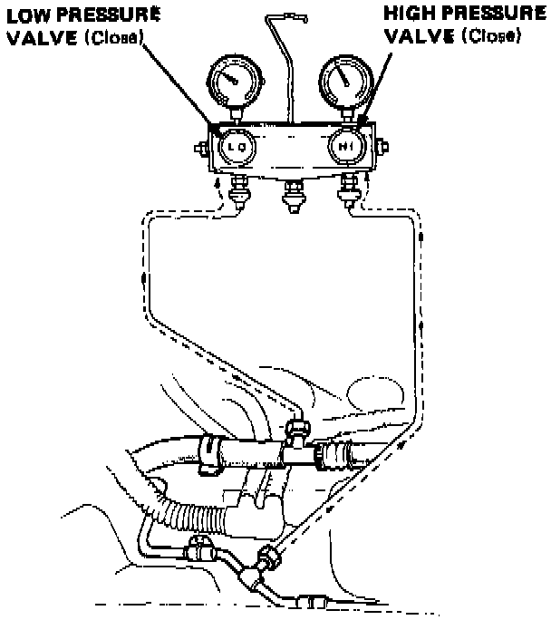
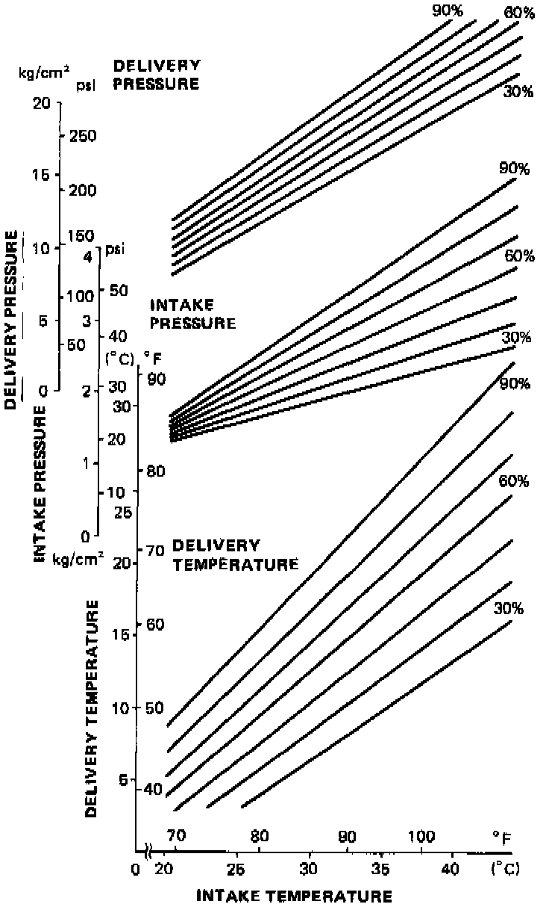

System Pressure Test
Pressure Test
1. Connect the gauges as shown.
2. Close both high and low pressure valves.
3. Test with the hood up, doors and windows open, temperature dial on COLD, function button on VENT and fan at MAX speed.
4. Leave the air conditioner on for about 10 min. The sight glass should be free of bubbles.
NOTE: Run the engine at 1,500 rpm.
5. The high pressure reading should be about 1,400 kPa (200 psi).
Performance Chart:

NOTE:
- Refer to the chart for effects of ambient temperature on pressure reading.
- If the readings are not correct, refer to the troubleshooting chart "Pressure Test Chart".